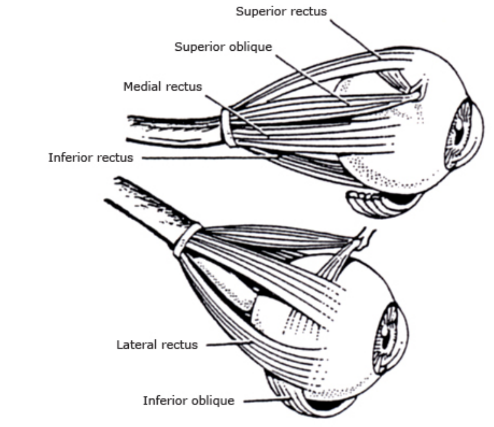
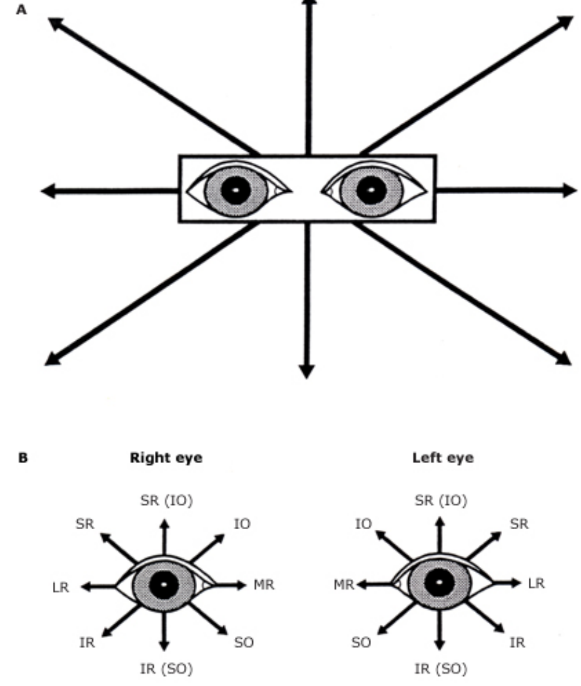
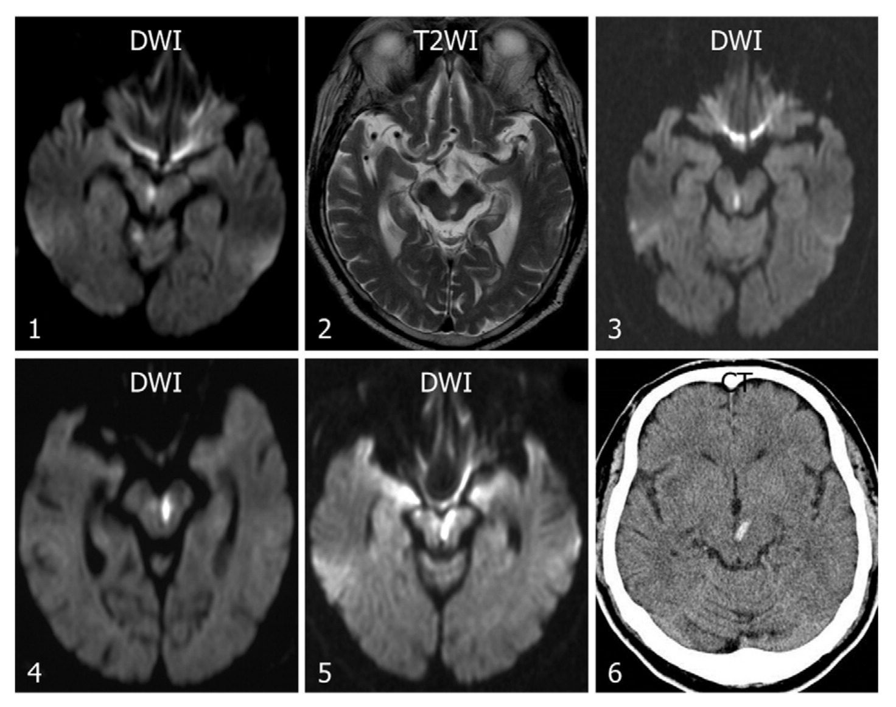
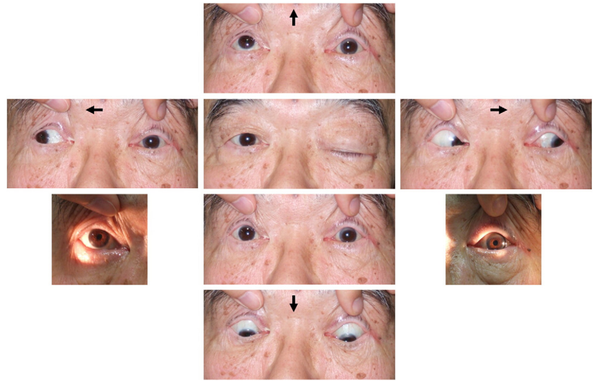
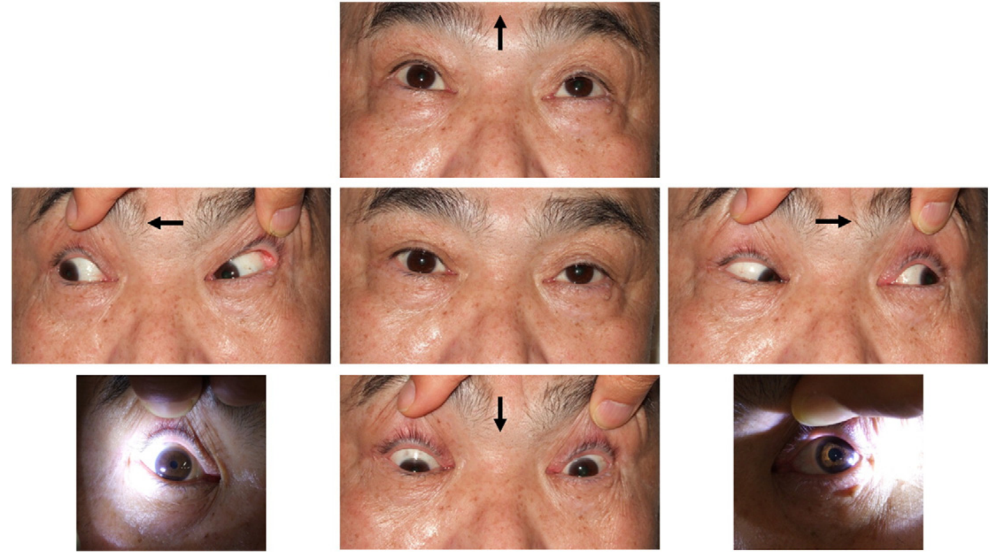
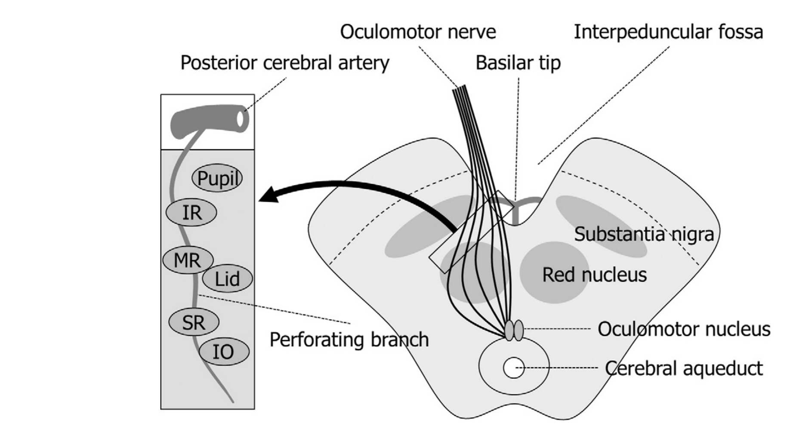
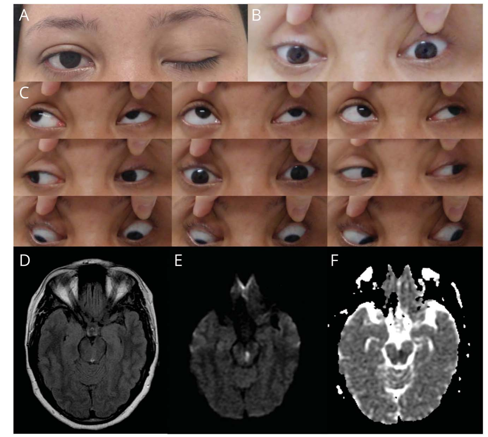

本ページで使用する略語一覧
| 略語 | 正式名称 — 日本語訳 |
| CN III | 3rd Cranial Nerve（Oculomotor）— 動眼神経 |
| CN IV | 4th Cranial Nerve（Trochlear）— 滑車神経 |
| CN VI | 6th Cranial Nerve（Abducens）— 外転神経 |
| SR / IR | Superior / Inferior Rectus — 上直筋 / 下直筋 |
| MR / LR | Medial / Lateral Rectus — 内直筋 / 外直筋 |
| SO / IO | Superior / Inferior Oblique — 上斜筋 / 下斜筋 |
| LP | Levator Palpebrae superioris — 上眼瞼挙筋 |
| INO | Internuclear Ophthalmoplegia — 核間性眼筋麻痺 |
| MLF | Medial Longitudinal Fasciculus — 内側縦束 |
| MG | Myasthenia Gravis — 重症筋無力症 |
| THS | Tolosa-Hunt Syndrome — トロサ・ハント症候群 |
| GCA | Giant Cell Arteritis — 巨細胞性動脈炎 |
| GBS | Guillain-Barré Syndrome — ギラン・バレー症候群 |
| PCA | Posterior Cerebral Artery — 後大脳動脈 |
| DWI | Diffusion-Weighted Imaging — 拡散強調画像 |
| FLAIR | Fluid-Attenuated Inversion Recovery — 水抑制画像 |
| ADC | Apparent Diffusion Coefficient — 見かけの拡散係数 |
| DM / HT | Diabetes Mellitus / Hypertension — 糖尿病 / 高血圧 |
SECTION 1 単眼性 vs 両眼性複視 ― 評価の第一歩
片眼を閉じると消えるか
複視の評価で最初に確かめるべきことは、両眼を開けたときだけ複視があり、どちらか一方の眼を閉じると消えるか（＝両眼性複視）である。両眼性複視は眼位のずれ（ocular misalignment）を示唆し、神経筋性の複視として本ページの対象となる。患者は通常、機能が低下した側の眼を閉じることを選ぶ（ただし、その眼の視力が良い場合は別）。
単眼性複視（片眼を閉じても残る）は、局所的な眼疾患や屈折異常を示唆し、眼科に紹介すべき問題で、本ページでは扱わない。核硬化性白内障では片眼または両眼で複数像を訴えることも多い。三重視（triplopia）は外眼筋麻痺ではまれで、通常は眼振やoscillopsiaに重なった一過性の現象である。
SECTION 2 外眼筋と支配神経
各眼を動かす3対6筋（Fig. 1）
それぞれの眼は3対（6筋）の外眼筋により、垂直方向（上・下）、水平方向（内転・外転）、回旋方向（内方回旋＝鼻側への回旋／外方回旋＝肩側への回旋）の3方向に動かされる。

| 神経・筋 | 主作用 | 副作用 | 第3作用 |
|---|---|---|---|
| 動眼神経（CN III） | |||
| 上直筋（SR） | 挙上（外転位で最大） | 内方回旋 | 内転 |
| 下直筋（IR） | 下制（外転位で最大） | 外方回旋 | 内転 |
| 内直筋（MR） | 内転 | なし | なし |
| 下斜筋（IO） | 外方回旋 | 挙上（内転位で最大） | 外転 |
| 滑車神経（CN IV） | |||
| 上斜筋（SO） | 内方回旋 | 下制（内転位で最大） | 外転 |
| 外転神経（CN VI） | |||
| 外直筋（LR） | 外転 | なし | なし |
上斜筋はCN IV、外直筋はCN VI、その他のすべての外眼筋はCN IIIが支配する（UpToDate Table 1）。
SECTION 3 9方向の診断的注視野
どの筋が弱いかを注視方向から読む（Fig. 2）
9つの診断的注視野（diagnostic positions of gaze）で衝動性運動・追従運動を観察するだけで、しばしばどの筋が機能していないかを判別できる。純粋な上転（supraduction）は主に上直筋、純粋な下転（infraduction）は主に下直筋が担い、斜筋がこれを補助する。

SUMMARY 第1章のキーメッセージ
SECTION 4 問診のポイント
両眼性複視で尋ねるべき質問
| 質問 | 診断的意義 |
|---|---|
| どの注視方向で複視が最悪か？ | 最悪の方向＝麻痺筋の作用方向（例：右LR麻痺→右方視で最大） |
| 2つの像が最も近づくのはどの方向か？ | 麻痺筋の作用と逆方向で像が接近する |
| 像のずれは垂直・水平・斜めのいずれか？ | 垂直＝斜筋・上下直筋、水平＝内外直筋を示唆 |
| 複視が楽になる頭位（代償頭位）があるか？ | 頭位の傾き・あご引き/上げが診断の手がかり |
| 遠見と近見でどちらが悪いか？ | 遠見悪化＝CN VI麻痺に典型的／近見悪化＝内直筋麻痺に典型的 |
| 日内変動・易疲労性はあるか？ | あれば重症筋無力症（MG）の古典的徴候 |
| 発症は急か緩徐か？経過は？ | 急性で固定＝虚血性、改善傾向＝良性、変動＝MG |
最後に、複視に伴って生じた他の症状（特に神経症状）を広く尋ねる。古い写真が眼瞼下垂・CN IV麻痺・瞳孔異常の判断に役立つこともある。
垂直複視・水平複視・回旋の手がかり
垂直複視：正面視での垂直複視は、左右いずれかのIR・SR・IO・SOの機能低下を示唆する。右方視で垂直のずれが増悪すれば右SR/IRまたは左IO/SO、右下方視で増悪すれば右IRまたは左SOの機能低下を疑う。
回旋（torsional）異常：左右の頭部傾斜で像のずれが増悪・改善する場合、斜筋障害による回旋偏位を疑う。上下直筋の機能低下はあご引き・あご上げで代償され、斜筋障害による回旋複視は角度のついた頭部傾斜を伴いうる。
水平複視：内直筋・外直筋またはその支配神経の障害による。像は左右に並ぶ。遠見悪化はCN VI麻痺、近見悪化は内直筋麻痺に典型的。
SECTION 5 痛みの有無 ― 有痛性眼筋麻痺の鑑別
痛みは重要な鑑別の分岐点
眼・眼窩・眼窩周囲の痛みの有無と部位を必ず確認する。有痛性眼筋麻痺は無痛性眼筋麻痺とは異なる特異的な鑑別をもつ（UpToDate Table 4）。
- 全般的な頭痛・側頭部痛 → びまん性頭蓋内病変を示唆。一方、弱い筋と同側の眉の真上に限局する痛みは、単一脳神経の孤立性病変を示唆する。
- 突然の「人生最悪」の頭痛 → 頭蓋内動脈瘤を強く疑う（緊急評価）。
- 強い、麻薬性鎮痛を要する、三叉神経第1・2枝領域に分布する痛み → 第5脳神経や眼筋への腫瘍の圧迫を示唆。前額・頬の感覚低下を慎重に確認。
- 眼球運動時の痛み → 筋炎・眼窩内病変を示唆。眼球運動痛があり複視がなければ視神経炎にも典型的。
| カテゴリ | 有痛性眼筋麻痺の主な原因（UpToDate Table 4） |
|---|---|
| 外傷 | 外傷 |
| 血管性 | 海綿静脈洞部内頸動脈瘤、後大脳動脈瘤、後交通動脈瘤、内頸動脈解離、頸動脈海綿静脈洞瘻、海綿静脈洞血栓症 |
| 腫瘍 | 下垂体腺腫・髄膜腫・頭蓋咽頭腫、脊索腫、上咽頭腫瘍・扁平上皮癌、リンパ腫・多発性骨髄腫・癌転移 |
| 炎症・感染 | 副鼻腔炎・粘液嚢胞・膿瘍、帯状疱疹、ムコール症・放線菌症、梅毒、結核、サルコイドーシス・多発血管炎性肉芽腫症、トロサ・ハント症候群、眼窩偽腫瘍 |
| その他 | 糖尿病性眼筋麻痺、眼筋麻痺性片頭痛、巨細胞性動脈炎（GCA） |
SECTION 6 診察 ― 瞳孔・他の脳神経・眼球
瞳孔 ― 圧迫性病変の警告サイン
CN IIIの副交感線維が障害され、他のCN III機能障害とともに瞳孔散大を伴う場合、それはCN IIIの圧迫性病変（典型的には動脈瘤、まれに腫瘍）の警告サインである。瞳孔は外側を走行する線維束のさらに表層を走るため、圧迫で障害されやすく、虚血では温存されやすい（→第5章で詳述）。
単純な診察ルール・補助検査
- 片側で複視が悪化し、眼が内寄り（交差）に見える → 外直筋が働いていない＝CN VI麻痺が最も疑わしい。
- 眼瞼下垂があり、内転・挙上・下制のいずれかが不良 → 少なくとも部分的なCN III麻痺。
- 頭を傾けたがり、複視が主に垂直で片側下方視で最悪 → CN IV麻痺。
- Red glass test：片眼に赤ガラスを当て、2つの像の由来眼を同定する（解釈には注意）。
- 制限性眼筋麻痺：拘縮・絞扼された筋では、その作用と逆方向への注視で眼圧が上昇する。7 mmHgの上昇は制限性眼筋症の診断的所見。甲状腺眼症では下直筋線維化により上方視で眼圧上昇。
- 他の脳神経：単一脳神経障害（mononeuropathy）は特発性が多いが、多発脳神経障害は完全な神経放射線・検査精査を要する。CN II・V・VII・VIIIの併存所見を確認。
- 眼球：眼球前方突出（exophthalmos）は甲状腺眼症を示唆。眼球の充血、最大/最小複視の頭位、眼瞼下垂の有無を確認。
SUMMARY 第2章のキーメッセージ
SECTION 7 垂直複視の原因（Table 2）
両眼性垂直複視・高位偏位の原因
垂直複視の患者は、上下に斜めにずれた2つの像を訴える。原因は多岐にわたり、核上性・眼球運動神経・神経筋接合部・筋・機械的（眼窩内）など、解剖学的レベルで整理する（UpToDate Table 2）。
| 分類 | 代表的原因 |
|---|---|
| 核上性 | 核上性単眼挙上麻痺、skew deviation、vertical one-and-a-half症候群、Wernicke症候群、MSに伴う発作性のSR・LP攣縮 |
| 眼球運動神経障害 | CN III麻痺、CN IV麻痺、上斜筋ミオキミア、ocular neuromyotonia、眼筋麻痺性片頭痛、Wernicke症候群、Fisher症候群、GBS、CN VI麻痺、長期phoriaの代償破綻 |
| 神経筋接合部 | 重症筋無力症、ボツリヌス症 |
| 眼筋疾患 | 垂直作動筋（SO・IO・SR・IR）の孤立性麻痺、甲状腺眼症、慢性進行性外眼筋麻痺、術後（白内障等）、先天性斜視、解離性垂直偏位、先天性double elevator麻痺、double depressor麻痺、外側注視時の生理的偏位 |
| 機械的（眼窩内） | Graves病、Brown上斜筋腱鞘症候群、眼窩底吹き抜け骨折、外眼筋への直達外傷、眼窩炎症（筋炎）・偽腫瘍、転移浸潤、fallen eye/rising eye症候群 |
| その他 | hemifield slip現象、中心窩偏位症候群、心因性（非器質性）垂直複視 |
SECTION 8 水平複視の原因（Table 3）
内斜視（esotropia）・外斜視（exotropia）
水平複視は内直筋・外直筋またはその支配神経の障害による。像は左右に並ぶ。正面視で内寄りが内斜視（esotropia）、外寄りが外斜視（exotropia）（UpToDate Table 3）。
| 内斜視（esotropia）の原因 | 外斜視（exotropia）の原因 |
|---|---|
| 小児斜視症候群、長期斜位の代償破綻、術後内斜視 | 小児斜視症候群、長期斜位の代償破綻、術後外斜視 |
| 筋・制限性：眼窩筋炎、甲状腺眼症、MG、内側眼窩壁骨折、外直筋の孤立性筋力低下、筋外傷、進行性外眼筋麻痺 | 筋・制限性：眼窩筋炎、甲状腺眼症（まれ）、MG、内直筋の孤立性筋力低下、筋外傷、進行性外眼筋麻痺 |
| 脳神経：CN VI麻痺、ocular neuromyotonia | 脳神経：CN III麻痺、ocular neuromyotonia |
| 中枢性：周期性内斜視、divergence不全/麻痺、急性後天性共同性内斜視、近見反射の攣縮、中脳pseudo-sixth麻痺、視床性内斜視、運動性融像不全、hemifield slide現象 | 中枢性：運動性融像不全、INO（WEMINO・WEBINO・one-and-a-half症候群＝paralytic pontine exotropia）、ビタミンE欠乏、convergence不全/麻痺、hemifield slide現象 |
SECTION 9 複視を伴わない眼位異常
明らかな眼位ずれがあるのに複視を訴えない場合
いくつかの理由がある：① 古い斜視で片眼の視覚が抑制されている、② 片眼の視力低下で大きな対象でしか複視を自覚しない、③ 像のずれが極端に大きく一方を無視できる、④ ずれが極めて小さく「ぼやけ」と訴える（2像の重なり）、⑤ 眼球運動時のみのずれで、運動時は視覚が抑制され複視を自覚しない。
SUMMARY 第3章のキーメッセージ
SECTION 10 動眼神経麻痺（CN III）と局在（Table 5）
完全CN III麻痺の所見と瞳孔の意味
CN III麻痺は垂直・水平いずれの複視も生じうる。完全片側CN III麻痺では、眼瞼下垂・大きく対光反応のない瞳孔・内転/挙上/下制の麻痺を呈し、眼は外転・軽度下転・内方回旋位に置かれる。瞳孔不同は明所で暗所より大きい。
| 病変部位 | 随伴所見 | 最多の原因 |
|---|---|---|
| 核 | 同側完全CN III＋対側眼瞼下垂＋対側SR筋力低下 | 梗塞、出血、腫瘍 |
| fascicle（神経束） | 対側片麻痺（Weber症候群）、対側振戦（Benedikt症候群）、同側失調（Nothnagel症候群） | 梗塞、出血、腫瘍、脱髄 |
| くも膜下腔 | 典型的には孤立性。頭痛・眼窩痛を伴いうる | ICA/Pcom A/脳底/PCA動脈瘤、微小血管（虚血）、腫瘍（下垂体・髄膜癌腫症）、髄膜炎、ヘルニア、外傷 |
| 海綿静脈洞 | CN IV・VI・V1・V2、Horner、痛みが目立つことあり | 腫瘍、炎症、頸動脈瘤、微小血管、血栓、動静脈瘻 |
| 眼窩尖端 | 眼球突出、視力低下、CN IV・VI・V1・V2、Horner、痛みが目立つことあり | 外傷、腫瘍、炎症、感染（真菌） |
SECTION 11 滑車神経（CN IV）・外転神経（CN VI）麻痺
CN IV麻痺 ― 垂直複視の一般的原因
CN IV（滑車神経）麻痺は垂直複視の一般的な原因である。先天性CN IV麻痺は、多くが複視を代償できるため、どの年齢でも顕在化しうる。後天性CN IV麻痺の多くは外傷性または微小血管性である。
CN VI麻痺 ― 遠見で悪化する水平複視（Table 6）
CN VI（外転神経）麻痺の患者は、主に遠見で悪化する水平複視を訴え、しばしば運転中に気づく。原因には悪性腫瘍・血管疾患・外傷がある。両側CN VI麻痺は頭蓋内圧亢進で見られることがある（UpToDate Table 6）。
| 病変部位 | 代表的原因（UpToDate Table 6） |
|---|---|
| 核 | 先天性（Möbius症候群等）、脱髄、虚血、腫瘍、外傷、代謝性（Wernicke病） |
| fascicle | 脱髄、梗塞、腫瘍、外傷 |
| くも膜下腔 | 動脈瘤・血管異常、癌性髄膜炎、手技後（頸椎牽引・シャント・脊椎/硬膜外麻酔・腰椎穿刺・脊髄造影）、炎症（血管炎・サルコイド・SLE）、感染（Lyme・梅毒・結核・髄膜炎・嚢虫症・HIV-CMV）、腫瘍 |
| 錐体尖 | 上咽頭癌、中耳炎・乳様突起炎、下錐体静脈洞血栓、頭蓋底骨折 |
| 海綿静脈洞 | 海綿静脈洞血栓・瘻、腫瘍（上咽頭癌・下垂体腺腫・形質細胞腫・神経鞘腫・頭蓋底/蝶形骨腫瘍）、虚血、炎症・感染、内頸動脈瘤/解離 |
| 眼窩 | 腫瘍性・炎症性・感染性・外傷性 |
SECTION 12 核間性眼筋麻痺（INO）
MLF病変による特異的な注視異常
INOは、患側眼の内転障害＋対側眼の外転眼振を特徴とする水平注視の特異的異常である。橋または中脳の背内側被蓋にある内側縦束（MLF）の病変（通常は脳卒中または脱髄）による。重症筋無力症はINOを模倣しうる点に注意（MGでは瞳孔は常に温存）。
SUMMARY 第4章のキーメッセージ
SECTION 13 純粋中脳梗塞による孤立性動眼神経麻痺
CN III単神経障害を模倣する中脳病変
純粋中脳脳卒中は、他の主要な神経学的徴候を伴わずに孤立性の片側動眼神経麻痺を生じ、CN IIIの単神経障害（cranial mononeuropathy III）を模倣することがある。この場合、病変は中脳腹内側部の動眼神経束（fascicle）に存在する。報告の多くで梗塞巣は小さく、神経束の障害は部分的で、眼筋麻痺の組み合わせは多彩である。
Amanoら（横浜脳卒中・神経脊椎センター）は、2008年5月〜2014年4月に急性脳梗塞または脳出血で入院した連続2447例（梗塞1878例・出血569例）から、他の神経徴候を伴わない孤立性片側動眼神経麻痺を呈した純粋中脳脳卒中6例を同定し、梗塞と出血で麻痺パターンに差があるかを検討した[Amano 2015]。構音障害・片麻痺・小脳失調などを伴う例、両側性で核病変を示唆する例は除外している。
（梗塞5例・出血1例）
（梗塞0.27%・出血0.18%）
支配の中脳傍正中部
SECTION 14 Amano症例集積（6例）― 梗塞 vs 出血（Table 1・Fig. 1）
6例の筋障害パターン（Table 1）
梗塞5例ではいずれも瞳孔括約筋（Pupil）と下直筋（IR）が選択的に温存され、LP・SR・IOが障害された（MRは5例中4例で障害）。一方、出血1例では瞳孔括約筋と下直筋が選択的に障害され、他の外眼筋は温存された。梗塞5例は全例がDM＋HTを有し、心原性塞栓源はなく、原因はアテローム血栓性・小血管病と考えられた。
| No. | 患者・危険因子 | 原因 | Pupil | IR | MR | Lid | SR | IO |
|---|---|---|---|---|---|---|---|---|
| 1 | 58歳 男・DM/HT | 右中脳梗塞 | − | − | − | ＋ | ＋ | ＋ |
| 2 | 74歳 男・DM/HT | 左中脳梗塞 | − | − | ＋ | ＋ | ＋ | ＋ |
| 3 | 66歳 男・DM/HT | 右中脳梗塞 | − | − | ＋ | ＋ | ＋ | ＋ |
| 4 | 79歳 男・DM/HT | 左中脳梗塞 | − | − | ＋ | ＋ | ＋ | ＋ |
| 5 | 71歳 男・DM/HT | 左中脳梗塞 | − | − | ＋ | ＋ | ＋ | ＋ |
| 6 | 66歳 男・HT | 左中脳出血 | ＋ | ＋ | − | − | − | − |
＋＝障害、−＝温存。Pupil＝瞳孔括約筋、IR＝下直筋、MR＝内直筋、Lid＝上眼瞼挙筋、SR＝上直筋、IO＝下斜筋（Amano 2015, Table 1）。

SECTION 15 梗塞 vs 出血のパターン差と機序（Fig. 2–4・Table 2）
梗塞例 ― 瞳孔・下直筋は温存（Fig. 2）
英文献の検索では、主要な神経徴候を伴わない孤立性動眼神経束梗塞は12例が報告され、83%で瞳孔括約筋が温存、50%で下直筋も温存されていた（Table 2）。本症例集積と文献から、瞳孔括約筋と下直筋を支配する神経束線維は虚血に比較的抵抗性であることが示唆される。

出血例 ― 瞳孔・下直筋が選択的に障害（Fig. 3）
出血例で見られた「瞳孔・下直筋の選択的障害」というパターンは、本症例集積・文献いずれの梗塞例にも認めなかった。これまで主要な神経徴候を伴わない孤立性動眼神経束出血は4例が報告され、そのうち75%で瞳孔括約筋の障害を認めた（Table 2）。出血では血腫が神経束を表層側から侵入したと考えられる。

なぜ差が生じるか ― 神経束の局所解剖と血流（Fig. 4）
瞳孔括約筋・下直筋を支配する線維は、中脳腹側で神経束の内側＝表層側を走り、MR・LP・SR・IOを支配する線維は外側＝より深部を走る。腹側中脳は脚間窩で正中分割され、神経束の内側部は中脳前面（表層）を、外側部はより深部を走る（Fig. 4）。
深部側は表層側に比べ、より遠位の動脈分節の穿通枝で灌流されるため虚血に脆弱である。これが中脳梗塞で「瞳孔・下直筋温存型（深部のLP・SR・IO・MR優位の障害）」という共通パターンを生む。逆に出血は表層側から血腫が侵入するため、表層の瞳孔・下直筋線維を障害する。

| 原因 | 障害の起点 | 典型パターン | 頻度（文献） |
|---|---|---|---|
| 梗塞 | 深部（遠位穿通枝灌流域） | LP・SR・IO（±MR）障害／瞳孔・下直筋は温存 | 瞳孔温存83%・下直筋温存50%（12例） |
| 出血 | 表層から血腫が侵入 | 瞳孔・下直筋を障害 | 瞳孔障害75%（4例） |
SECTION 16 若年例 ― 瞳孔回避型 infranuclear CN III麻痺（Lahoz症例）
27歳女性の中脳梗塞による瞳孔回避型CN III麻痺
肥満・喫煙歴のある27歳女性が複視で受診。左眼の眼瞼下垂・内転/上転/下転障害を呈し、瞳孔は回避（pupil-sparing）。脳MRIで左中脳に拡散制限を認め、虚血と診断された[Lahoz-Fernandez 2021]。
瞳孔回避型CN III麻痺は、典型的には糖尿病性の海綿静脈洞部cisternal segmentにおける中心線維の微小血管虚血と関連するが、脳幹脳卒中における部分的なfascicular病変・眼筋麻痺性片頭痛・まれに動脈瘤とも関連する。微小血管性・脳幹虚血は瞳孔障害の有無にかかわらず予後は比較的良好だが、特に若年例では二次予防のための原因精査が重要である。

SUMMARY 第5章のキーメッセージ
SECTION 17 神経筋接合部・筋疾患
重症筋無力症（MG）と甲状腺眼症
重症筋無力症：外眼筋はしばしば障害される。症状は軽度のかすみから重度の複視まで多彩で、INOを模倣しうる。片側/両側の眼瞼下垂は一般的だが変動し、左右が入れ替わることもある。多くは眼痛・頭痛を伴わない。易疲労性と所見の変動性が特徴。眼球運動障害は単一の神経・筋の解剖に一致しないことがある。瞳孔は常に温存され、ボツリヌス症などとの鑑別に役立つ。
甲状腺眼症：水平・垂直複視の一般的原因。外眼筋運動制限はIR・MR・SRの順に好発する。筋の拘縮・制限により、複視は障害筋の作用と逆方向で悪化する。高位偏位（上方偏位）と内斜視が多く、外直筋は通常侵されないため外斜視はまれ。片眼または両眼の挙上制限＋垂直偏位が最も一般的な眼球運動障害で、眼球突出・眼窩周囲浮腫を伴う。
SECTION 18 その他の重要な原因
見逃せない・知っておくべき病態
| 病態 | 要点 |
|---|---|
| 眼筋麻痺性片頭痛 | まれ。小児・若年に多い。他疾患を除外して診断。CN III（最多）・IV・VI を侵す。MRIでガドリニウム増強（罹患脳神経の槽部分）を認め、反復性脱髄性ニューロパチーの可能性。 |
| Wernicke症候群 | チアミン欠乏（アルコール多飲）。核上性・核病変による垂直/水平複視。脳症・歩行失調を伴うが必発ではない。眼瞼下垂・痛みはまれ。 |
| 眼窩筋炎 | 外眼筋の特発性炎症。CN III分布の孤立性眼筋障害に見える。急性〜亜急性の眼窩痛＋水平複視。痛みがなければ別診断。結膜浮腫・充血・眼瞼下垂・眼球突出。画像で限局/びまん性炎症。ステロイドで軽快。 |
| トロサ・ハント症候群（THS） | まれ。海綿静脈洞の特発性肉芽腫性炎症によるCN III/IV/VIの有痛性眼筋麻痺。ステロイド反応性。良性とされるが永続的欠損・再発もあり、悪性腫瘍・感染との鑑別が重要。 |
| GBS / Miller Fisher | 急性炎症性脱髄性多発ニューロパチー（GBS）が外眼筋障害を初発に呈しうる（Fisher / Miller Fisher変異）。深部腱反射消失。眼筋障害はしばしば（必発ではない）両側性・対称性。失調を伴うことが多い。 |
| 巨細胞性動脈炎（GCA） | 複視を呈しうる（通常は他の示唆的所見を伴う）。有痛性眼筋麻痺の鑑別にも含まれる。 |
| その他 | ダニ咬傷麻痺・ボツリヌス症（神経筋接合部）、頭蓋底・海綿静脈洞の構造的病変（転移・感染）による多発脳神経障害。 |
SUMMARY 第6章のキーメッセージ
SECTION 19 4つの問いで整理する
複視評価の実践的キャベアット（UpToDate）
複視評価に標準的なガイドラインを定めるのは難しい（多くは重篤になりうる）。以下の問いが有用である。
単一の神経か？ 他の神経（対側CN VI含む）の併存＝より重篤な病態を示唆し、神経画像を含む広範な評価が必要。
痛みはあるか？ 有痛性眼筋麻痺は特異的鑑別（Table 4）。突然の激しい頭痛は脳動脈瘤の緊急評価を要する。
併存疾患は関与するか？ 糖尿病はCN III/IV/VIの微小血管障害と関連。慢性アルコールはWernickeの危険因子。
発症・経過は？ 改善傾向＝ほぼ良性、変動＝MG、突然発症＝虚血と整合的。
SUMMARY 本ページ全体のまとめ
出典①：Brazis PW. Overview of diplopia. UpToDate（Topic 5238, Version 11.0；最終更新 2024年4月19日）。
出典②：Amano Y, Kudo Y, Kikyo H, et al. Isolated unilateral oculomotor paresis in pure midbrain stroke. J Neurol Sci 2015；351:191-195. DOI：https://doi.org/10.1016/j.jns.2015.03.012
出典③：Lahoz Fernandez PE, de Sousa Brito V, Vieira Silveira CG, et al. Teaching Video NeuroImage: Pupil-Sparing Infranuclear Third Nerve Palsy Pattern Caused by a Mesencephalic Stroke. Neurology 2021；97:e1166-e1167. DOI：https://doi.org/10.1212/WNL.0000000000012189
本資料は教育目的で作成したサマリーです。診断・治療方針の決定には必ず原典を参照してください。
制作：ICU 関谷